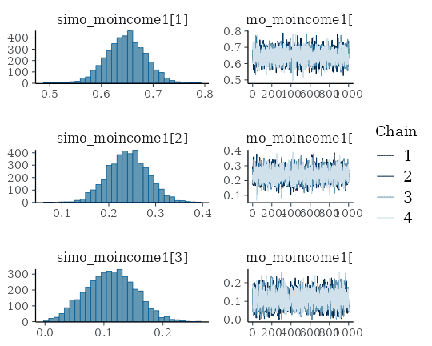
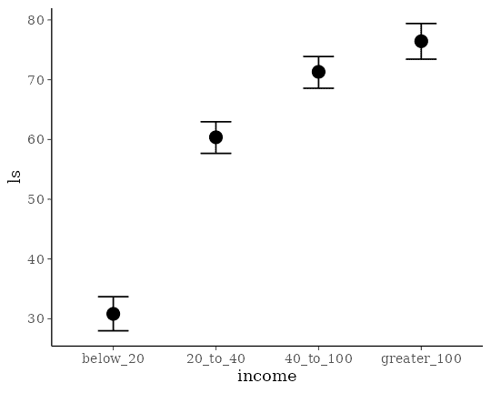
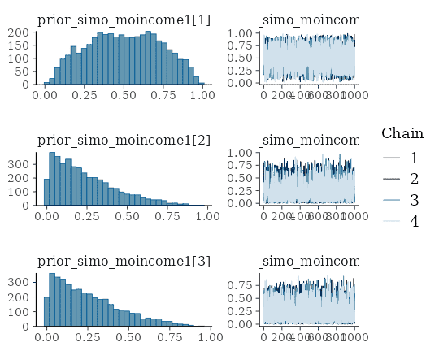
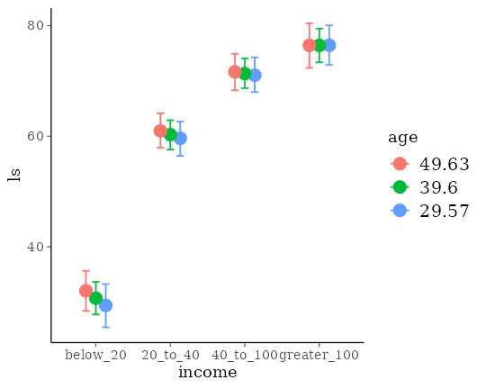

Estimating Monotonic Effects with brms
Paul Bürkner
2026-09-04
Source:vignettes/brms_monotonic.Rmd
brms_monotonic.RmdIntroduction
This vignette is about monotonic effects, a special way of handling discrete predictors that are on an ordinal or higher scale (Bürkner & Charpentier, in review). A predictor, which we want to model as monotonic (i.e., having a monotonically increasing or decreasing relationship with the response), must either be integer valued or an ordered factor. As opposed to a continuous predictor, predictor categories (or integers) are not assumed to be equidistant with respect to their effect on the response variable. Instead, the distance between adjacent predictor categories (or integers) is estimated from the data and may vary across categories. This is realized by parameterizing as follows: One parameter, \(b\), takes care of the direction and size of the effect similar to an ordinary regression parameter. If the monotonic effect is used in a linear model, \(b\) can be interpreted as the expected average difference between two adjacent categories of the ordinal predictor. An additional parameter vector, \(\zeta\), estimates the normalized distances between consecutive predictor categories which thus defines the shape of the monotonic effect. For a single monotonic predictor, \(x\), the linear predictor term of observation \(n\) looks as follows:
\[\eta_n = b D \sum_{i = 1}^{x_n} \zeta_i\]
The parameter \(b\) can take on any real value, while \(\zeta\) is a simplex, which means that it satisfies \(\zeta_i \in [0,1]\) and \(\sum_{i = 1}^D \zeta_i = 1\) with \(D\) being the number of elements of \(\zeta\). Equivalently, \(D\) is the number of categories (or highest integer in the data) minus 1, since we start counting categories from zero to simplify the notation.
A Simple Monotonic Model
A main application of monotonic effects are ordinal predictors that can be modeled this way without falsely treating them either as continuous or as unordered categorical predictors. In Psychology, for instance, this kind of data is omnipresent in the form of Likert scale items, which are often treated as being continuous for convenience without ever testing this assumption. As an example, suppose we are interested in the relationship of yearly income (in $) and life satisfaction measured on an arbitrary scale from 0 to 100. Usually, people are not asked for the exact income. Instead, they are asked to rank themselves in one of certain classes, say: ‘below 20k’, ‘between 20k and 40k’, ‘between 40k and 100k’ and ‘above 100k’. We use some simulated data for illustration purposes.
income_options <- c("below_20", "20_to_40", "40_to_100", "greater_100")
income <- factor(sample(income_options, 100, TRUE),
levels = income_options, ordered = TRUE)
mean_ls <- c(30, 60, 70, 75)
ls <- mean_ls[income] + rnorm(100, sd = 7)
dat <- data.frame(income, ls)We now proceed with analyzing the data modeling income
as a monotonic effect.
The summary methods yield
summary(fit1) Family: gaussian
Links: mu = identity
Formula: ls ~ mo(income)
Data: dat (Number of observations: 100)
Draws: 4 chains, each with iter = 2000; warmup = 1000; thin = 1;
total post-warmup draws = 4000
Regression Coefficients:
Estimate Est.Error l-95% CI u-95% CI Rhat Bulk_ESS Tail_ESS
Intercept 30.84 1.45 27.99 33.68 1.00 2560 2497
moincome 15.20 0.70 13.82 16.54 1.00 2238 2552
Monotonic Simplex Parameters:
Estimate Est.Error l-95% CI u-95% CI Rhat Bulk_ESS Tail_ESS
moincome1[1] 0.65 0.04 0.57 0.72 1.00 4184 2829
moincome1[2] 0.24 0.04 0.16 0.33 1.00 2800 2048
moincome1[3] 0.11 0.04 0.03 0.19 1.00 2757 1973
Further Distributional Parameters:
Estimate Est.Error l-95% CI u-95% CI Rhat Bulk_ESS Tail_ESS
sigma 7.13 0.52 6.21 8.23 1.00 3534 2653
Draws were sampled using sampling(NUTS). For each parameter, Bulk_ESS
and Tail_ESS are effective sample size measures, and Rhat is the potential
scale reduction factor on split chains (at convergence, Rhat = 1).
plot(fit1, variable = "simo", regex = TRUE)
plot(conditional_effects(fit1))
The distributions of the simplex parameter of income, as
shown in the plot method, demonstrate that the largest
difference (about 70% of the difference between minimum and maximum
category) is between the first two categories.
Now, let’s compare of monotonic model with two common alternative
models. (a) Assume income to be continuous:
dat$income_num <- as.numeric(dat$income)
fit2 <- brm(ls ~ income_num, data = dat)
summary(fit2) Family: gaussian
Links: mu = identity
Formula: ls ~ income_num
Data: dat (Number of observations: 100)
Draws: 4 chains, each with iter = 2000; warmup = 1000; thin = 1;
total post-warmup draws = 4000
Regression Coefficients:
Estimate Est.Error l-95% CI u-95% CI Rhat Bulk_ESS Tail_ESS
Intercept 22.80 2.44 18.18 27.56 1.00 4299 3243
income_num 15.01 0.91 13.22 16.74 1.00 4091 3131
Further Distributional Parameters:
Estimate Est.Error l-95% CI u-95% CI Rhat Bulk_ESS Tail_ESS
sigma 9.56 0.68 8.30 10.94 1.00 3485 2930
Draws were sampled using sampling(NUTS). For each parameter, Bulk_ESS
and Tail_ESS are effective sample size measures, and Rhat is the potential
scale reduction factor on split chains (at convergence, Rhat = 1).or (b) Assume income to be an unordered factor:
contrasts(dat$income) <- contr.treatment(4)
fit3 <- brm(ls ~ income, data = dat)
summary(fit3) Family: gaussian
Links: mu = identity
Formula: ls ~ income
Data: dat (Number of observations: 100)
Draws: 4 chains, each with iter = 2000; warmup = 1000; thin = 1;
total post-warmup draws = 4000
Regression Coefficients:
Estimate Est.Error l-95% CI u-95% CI Rhat Bulk_ESS Tail_ESS
Intercept 30.56 1.46 27.70 33.34 1.00 2638 2541
income2 29.83 1.99 25.94 33.81 1.00 2816 2679
income3 40.79 2.01 36.86 44.75 1.00 3195 2888
income4 46.00 2.13 41.84 50.15 1.00 2796 2776
Further Distributional Parameters:
Estimate Est.Error l-95% CI u-95% CI Rhat Bulk_ESS Tail_ESS
sigma 7.14 0.51 6.19 8.21 1.00 3851 2777
Draws were sampled using sampling(NUTS). For each parameter, Bulk_ESS
and Tail_ESS are effective sample size measures, and Rhat is the potential
scale reduction factor on split chains (at convergence, Rhat = 1).We can easily compare the fit of the three models using leave-one-out cross-validation.
loo(fit1, fit2, fit3)Output of model 'fit1':
Computed from 4000 by 100 log-likelihood matrix.
Estimate SE
elpd_loo -340.2 7.2
p_loo 4.9 0.8
looic 680.4 14.4
------
MCSE of elpd_loo is 0.0.
MCSE and ESS estimates assume MCMC draws (r_eff in [0.6, 1.0]).
All Pareto k estimates are good (k < 0.7).
See help('pareto-k-diagnostic') for details.
Output of model 'fit2':
Computed from 4000 by 100 log-likelihood matrix.
Estimate SE
elpd_loo -368.8 6.6
p_loo 2.9 0.5
looic 737.5 13.2
------
MCSE of elpd_loo is 0.0.
MCSE and ESS estimates assume MCMC draws (r_eff in [0.8, 1.2]).
All Pareto k estimates are good (k < 0.7).
See help('pareto-k-diagnostic') for details.
Output of model 'fit3':
Computed from 4000 by 100 log-likelihood matrix.
Estimate SE
elpd_loo -340.2 7.1
p_loo 4.8 0.8
looic 680.3 14.3
------
MCSE of elpd_loo is 0.0.
MCSE and ESS estimates assume MCMC draws (r_eff in [0.6, 1.3]).
All Pareto k estimates are good (k < 0.7).
See help('pareto-k-diagnostic') for details.
Model comparisons:
model elpd_diff se_diff p_worse diag_diff diag_elpd
fit3 0.0 0.0 NA
fit1 0.0 0.2 0.58 |elpd_diff| < 4
fit2 -28.6 5.6 1.00 The monotonic model fits better than the continuous model, which is
not surprising given that the relationship between income
and ls is non-linear. The monotonic and the unordered
factor model have almost identical fit in this example, but this may not
be the case for other data sets.
Setting Prior Distributions
In the previous monotonic model, we have implicitly assumed that all differences between adjacent categories were a-priori the same, or formulated correctly, had the same prior distribution. In the following, we want to show how to change this assumption. The canonical prior distribution of a simplex parameter is the Dirichlet distribution, a multivariate generalization of the beta distribution. It is non-zero for all valid simplexes (i.e., \(\zeta_i \in [0,1]\) and \(\sum_{i = 1}^D \zeta_i = 1\)) and zero otherwise. The Dirichlet prior has a single parameter \(\alpha\) of the same length as \(\zeta\). The higher \(\alpha_i\) the higher the a-priori probability of higher values of \(\zeta_i\). Suppose that, before looking at the data, we expected that the same amount of additional money matters more for people who generally have less money. This translates into a higher a-priori values of \(\zeta_1\) (difference between ‘below_20’ and ‘20_to_40’) and hence into higher values of \(\alpha_1\). We choose \(\alpha_1 = 2\) and \(\alpha_2 = \alpha_3 = 1\), the latter being the default value of \(\alpha\). To fit the model we write:
prior4 <- prior(dirichlet(c(2, 1, 1)), class = "simo", coef = "moincome1")
fit4 <- brm(ls ~ mo(income), data = dat,
prior = prior4, sample_prior = TRUE)The 1 at the end of "moincome1" may appear
strange when first working with monotonic effects. However, it is
necessary as one monotonic term may be associated with multiple simplex
parameters, if interactions of multiple monotonic variables are included
in the model.
summary(fit4) Family: gaussian
Links: mu = identity
Formula: ls ~ mo(income)
Data: dat (Number of observations: 100)
Draws: 4 chains, each with iter = 2000; warmup = 1000; thin = 1;
total post-warmup draws = 4000
Regression Coefficients:
Estimate Est.Error l-95% CI u-95% CI Rhat Bulk_ESS Tail_ESS
Intercept 30.81 1.46 27.98 33.73 1.00 2810 2016
moincome 15.18 0.70 13.82 16.50 1.00 2129 2435
Monotonic Simplex Parameters:
Estimate Est.Error l-95% CI u-95% CI Rhat Bulk_ESS Tail_ESS
moincome1[1] 0.65 0.04 0.58 0.73 1.00 3327 2749
moincome1[2] 0.24 0.04 0.15 0.32 1.00 2608 2162
moincome1[3] 0.11 0.04 0.02 0.19 1.00 2103 1306
Further Distributional Parameters:
Estimate Est.Error l-95% CI u-95% CI Rhat Bulk_ESS Tail_ESS
sigma 7.12 0.52 6.18 8.23 1.00 3149 2253
Draws were sampled using sampling(NUTS). For each parameter, Bulk_ESS
and Tail_ESS are effective sample size measures, and Rhat is the potential
scale reduction factor on split chains (at convergence, Rhat = 1).We have used sample_prior = TRUE to also obtain draws
from the prior distribution of simo_moincome1 so that we
can visualized it.
plot(fit4, variable = "prior_simo", regex = TRUE, N = 3)
As is visible in the plots, simo_moincome1[1] was
a-priori on average twice as high as simo_moincome1[2] and
simo_moincome1[3] as a result of setting \(\alpha_1\) to 2.
Modeling interactions of monotonic variables
Suppose, we have additionally asked participants for their age.
dat$age <- rnorm(100, mean = 40, sd = 10)We are not only interested in the main effect of age but also in the
interaction of income and age. Interactions with monotonic variables can
be specified in the usual way using the * operator:
summary(fit5) Family: gaussian
Links: mu = identity
Formula: ls ~ mo(income) * age
Data: dat (Number of observations: 100)
Draws: 4 chains, each with iter = 2000; warmup = 1000; thin = 1;
total post-warmup draws = 4000
Regression Coefficients:
Estimate Est.Error l-95% CI u-95% CI Rhat Bulk_ESS Tail_ESS
Intercept 25.48 5.19 14.91 35.41 1.00 1181 2130
age 0.13 0.12 -0.10 0.39 1.00 1137 1903
moincome 17.00 2.59 12.15 22.26 1.00 939 1259
moincome:age -0.04 0.06 -0.17 0.07 1.00 948 1246
Monotonic Simplex Parameters:
Estimate Est.Error l-95% CI u-95% CI Rhat Bulk_ESS Tail_ESS
moincome1[1] 0.63 0.06 0.52 0.76 1.00 1638 1496
moincome1[2] 0.25 0.05 0.15 0.35 1.00 2310 2193
moincome1[3] 0.12 0.05 0.02 0.23 1.00 1550 926
moincome:age1[1] 0.39 0.25 0.02 0.87 1.00 2279 2120
moincome:age1[2] 0.32 0.23 0.01 0.84 1.00 2378 2308
moincome:age1[3] 0.29 0.22 0.01 0.79 1.00 2497 2232
Further Distributional Parameters:
Estimate Est.Error l-95% CI u-95% CI Rhat Bulk_ESS Tail_ESS
sigma 7.13 0.52 6.20 8.22 1.00 3144 3073
Draws were sampled using sampling(NUTS). For each parameter, Bulk_ESS
and Tail_ESS are effective sample size measures, and Rhat is the potential
scale reduction factor on split chains (at convergence, Rhat = 1).
conditional_effects(fit5, "income:age")
Modelling Monotonic Group-Level Effects
Suppose that the 100 people in our sample data were drawn from 10
different cities; 10 people per city. Thus, we add an identifier for
city to the data and add some city-related variation to
ls.
dat$city <- rep(1:10, each = 10)
var_city <- rnorm(10, sd = 10)
dat$ls <- dat$ls + var_city[dat$city]With the following code, we fit a multilevel model assuming the
intercept and the effect of income to vary by city:
summary(fit6) Family: gaussian
Links: mu = identity
Formula: ls ~ mo(income) * age + (mo(income) | city)
Data: dat (Number of observations: 100)
Draws: 4 chains, each with iter = 2000; warmup = 1000; thin = 1;
total post-warmup draws = 4000
Multilevel Hyperparameters:
~city (Number of levels: 10)
Estimate Est.Error l-95% CI u-95% CI Rhat Bulk_ESS Tail_ESS
sd(Intercept) 16.83 4.76 10.02 28.07 1.01 1190 1971
sd(moincome) 1.30 1.05 0.05 3.81 1.00 1277 1757
cor(Intercept,moincome) -0.23 0.50 -0.95 0.84 1.00 4104 2582
Regression Coefficients:
Estimate Est.Error l-95% CI u-95% CI Rhat Bulk_ESS Tail_ESS
Intercept 21.66 7.40 7.37 36.51 1.00 1156 1590
age 0.16 0.12 -0.07 0.40 1.00 1847 2427
moincome 17.05 2.60 11.88 22.38 1.00 1597 1801
moincome:age -0.05 0.06 -0.18 0.07 1.00 1481 1648
Monotonic Simplex Parameters:
Estimate Est.Error l-95% CI u-95% CI Rhat Bulk_ESS Tail_ESS
moincome1[1] 0.63 0.06 0.50 0.75 1.00 2155 1938
moincome1[2] 0.25 0.06 0.14 0.37 1.00 2785 1962
moincome1[3] 0.12 0.05 0.02 0.24 1.00 2612 1751
moincome:age1[1] 0.34 0.23 0.01 0.83 1.00 3784 2243
moincome:age1[2] 0.36 0.24 0.02 0.84 1.00 3462 2467
moincome:age1[3] 0.30 0.22 0.01 0.78 1.00 4059 2646
Further Distributional Parameters:
Estimate Est.Error l-95% CI u-95% CI Rhat Bulk_ESS Tail_ESS
sigma 7.02 0.57 6.03 8.25 1.00 3919 2892
Draws were sampled using sampling(NUTS). For each parameter, Bulk_ESS
and Tail_ESS are effective sample size measures, and Rhat is the potential
scale reduction factor on split chains (at convergence, Rhat = 1).reveals that the effect of income varies only little
across cities. For the present data, this is not overly surprising given
that, in the data simulations, we assumed income to have
the same effect across cities.
References
Bürkner P. C. & Charpentier, E. (in review). Monotonic Effects: A Principled Approach for Including Ordinal Predictors in Regression Models. PsyArXiv preprint.